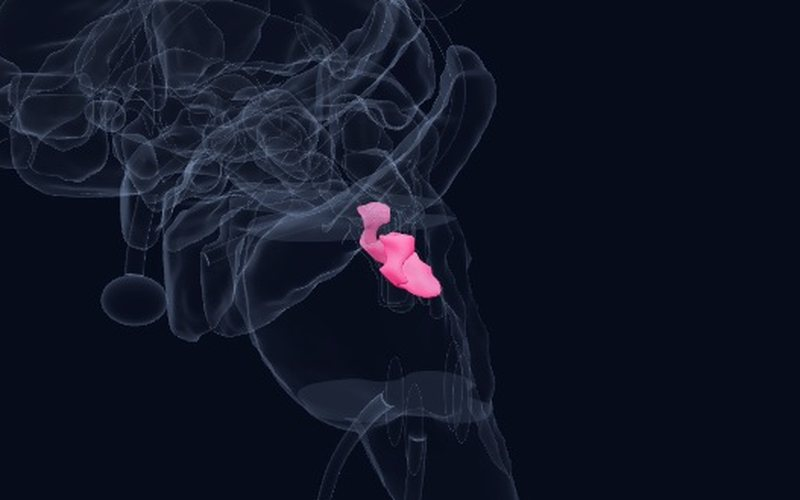

Newsletter · Issue 1 · 14 October 2026
Early experience and stress sensitivity
In our first issue we look at four ways childhood experience leaves its mark on mental health: how well a very widely used attachment program actually works, the heavier-than-assumed consequences of emotional abuse, what the course of temperament in the early years tells us, and how earlier adversity makes the brain more sensitive to new stress.
This week's studies
AMeta‑analysis, systematic reviewJournal of Child Psychology and Psychiatry2026
Circle of Security-Parenting: no robust effects for a widely used attachment program
8 randomized trials, 1,094 families
DetailsClose
 Atlas
Atlas
Finding
Circle of Security-Parenting (COSP) is one of the most widely used attachment-based preventive parenting programs; more than 50,000 practitioners worldwide have been trained in it. This preregistered meta-analysis pooled all eight randomized trials of the program (1,094 families). Across parenting (sensitive interaction, reflective functioning, attitudes), parent mental health (stress, depression, anxiety) and child outcomes (attachment security, behavior problems), the overall effect was not significant (Cohen's d = 0.14), and none of the three domains showed an effect different from zero. Some concerns about risk of bias were found in 82% of the trials.
Why it matters
The spread of an attachment-based program in clinical practice and policy appears to have outpaced the evidence for its effect. Supporting attachment remains important, but which interventions actually work needs to be tested in randomized trials.
Limitation
There are few trials and most carry some risk of bias; the result does not show that the program never works, only that its effect has not yet been reliably demonstrated.
Bakermans-Kranenburg MJ, Galbally M, Hawkins E, et al. Research Review: No robust effects of Circle of Security-Parenting (COSP) on parenting, parents, or children - a systematic review and meta-analysis of randomized controlled trials. Journal of Child Psychology and Psychiatry. 2026. doi:10.1111/jcpp.70240
AMeta‑analysisPsychological Bulletin2026
Emotional abuse leaves at least as deep a mark as physical and sexual abuse
104 studies, 113,673 participants
DetailsClose
 Atlas
Atlas
Finding
This multilevel meta-analysis pooled 414 effect sizes from 104 studies (113,673 participants). Childhood emotional, physical and sexual abuse were all associated with adult psychopathology (r = 0.34, 0.25 and 0.23, respectively), with associations estimated while controlling for co-occurring types of abuse. Emotional abuse showed the strongest association with depressive, anxiety, personality, psychotic and substance use syndromes. These associations did not vary with demographics, sample source, diagnostic system or assessment measure.
Why it matters
Because emotional abuse leaves no physical trace, it is often treated as less serious in clinical and legal settings. This finding shows that emotional abuse should be asked about systematically when taking a history.
Limitation
The studies rely mostly on retrospective self-report and cross-sectional designs; cause and effect cannot be inferred.
Miron N, D'Andrea WM, Barzilai E, et al. Childhood emotional abuse and adult psychopathology: A multilevel meta-analytic review. Psychological Bulletin. 2026. doi:10.1037/bul0000530
CCohort study, genetic studyMolecular Psychiatry2026
Departures from the expected course of temperament signal later psychiatric risk
more than 50,000 children (Norwegian MoBa cohort)
DetailsClose
 Atlas
Atlas
Finding
Temperament was measured at ages 1.5, 3 and 5 in more than 50,000 children in the Norwegian Mother, Father and Child Cohort Study; each child's expected developmental trajectory was modeled and the child's departure from it was calculated. The departures formed two transdiagnostic dimensions: the first was associated with a later ADHD diagnosis (HR = 1.54) and the second with a diagnosis of Asperger syndrome (HR = 1.64). Longitudinal genome-wide analyses found genetic loci shared between temperament and these diagnoses, with effects that strengthened or weakened across early childhood.
Why it matters
Following a child's own developmental course, rather than relying on a single assessment, may help identify children at risk earlier. The finding supports treating temperament as a developing process rather than a fixed trait.
Limitation
A single country's cohort with parent-reported temperament; it is not a tool for individual diagnosis.
Kopal J, Bakken NR, Parekh P, et al. Early-childhood temperament trajectories map onto transdiagnostic psychiatric risk. Molecular Psychiatry. 2026. doi:10.1038/s41380-026-03881-0
CAnimal studyNature2026
A circuit from the amygdala to the anterior hypothalamus sets stress sensitivity
Pennington ZT et al.
DetailsClose
 Atlas
Atlas
Finding
Earlier adversity increases sensitivity to later stressful events, but the causal changes in the brain are poorly understood. Using whole-brain activity mapping in mice, the researchers found that the anterior hypothalamic nucleus (AHN) over-responded to new stress in previously stressed animals. Miniscope imaging showed that AHN activity scaled with negative valence, and earlier stress increased the proportion of such neurons. Inhibiting AHN neurons blunted stress responses and exciting them promoted them; silencing the amygdala's input to the AHN abolished the sensitized stress response.
Why it matters
It reveals a concrete circuit through which earlier adversity becomes lasting stress sensitivity. It offers a new candidate pathway for understanding heightened reactivity after trauma; in the atlas, it can be followed as the link between the amygdala and the hypothalamus.
Limitation
A study in mice; it has not yet been shown that the same circuit plays the same role in humans.
Pennington ZT, LaBanca AR, Mahmud AN, et al. An amygdala to anterior hypothalamic circuit gates stress sensitivity. Nature. 2026. doi:10.1038/s41586-026-11075-5
Structure of the week

Brainstem
Parabrachial Complex
The crossroads for danger signals from the body: relays visceral, taste, pain, temperature and breathlessness information to the amygdala, hypothalamus and insula.
From the book
The amygdala is simplified as the “fear center”, but it is really a salience engine: it can mark even a neutral stimulus as dangerous on the basis of past experience. This explains why a lack of early CARE later turns into a generalized state of vigilance — the amygdala learns the “dangerous” label in a narrow context and spreads it to a broad one.
— The Green Walnut on the Couch, Chapter 20: Neuroanatomical Correlation (Turkish original: Divandaki Yeşil Ceviz)
A question for readers
When a program meant to support attachment shows no measurable effect, is the problem in the program itself, or in the outcomes we measure?
You can send your answer by email:
[email protected]References
- Bakermans-Kranenburg MJ, Galbally M, Hawkins E, et al. Research Review: No robust effects of Circle of Security-Parenting (COSP) on parenting, parents, or children - a systematic review and meta-analysis of randomized controlled trials. Journal of Child Psychology and Psychiatry. 2026. doi:10.1111/jcpp.70240
- Miron N, D'Andrea WM, Barzilai E, et al. Childhood emotional abuse and adult psychopathology: A multilevel meta-analytic review. Psychological Bulletin. 2026. doi:10.1037/bul0000530
- Kopal J, Bakken NR, Parekh P, et al. Early-childhood temperament trajectories map onto transdiagnostic psychiatric risk. Molecular Psychiatry. 2026. doi:10.1038/s41380-026-03881-0
- Pennington ZT, LaBanca AR, Mahmud AN, et al. An amygdala to anterior hypothalamic circuit gates stress sensitivity. Nature. 2026. doi:10.1038/s41586-026-11075-5
This newsletter is for education and is not medical advice; consult your doctor for diagnosis and treatment decisions. The summaries are written in our own words from the studies' abstracts and open-access full texts; see the article itself for details and definitive results.
Level of evidence (as in the atlas): A large consortium, meta-analysis or regulatory decision; B replicated studies or classic case; C single or pioneering study. Preprints have not been peer reviewed.